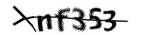

Online Captcha Solving When Using R for Web Crawling
Xinzhuo Huang ![]()
How to write a robust web cralwer using R that can successfully bypass captcha checks is as follows: firstly, maintain a logged-in state.
Next, download the captcha locally. Following this, import the Python module ddddocr for OCR recognition to identify the characters in the captcha. After the captcha has been successfully identified, we submit it to bypass the verification.
This allows us to continue with our web crawling activities unhindered. In web crawling, effective exception handling is paramount, and the functional programming tools provided by purrr can be incredibly helpful.
Code
handle <- handle("sample_website")
GET(
"sample_website",
handle = handle,
write_disk("blog/captcha/captcha_new.jpg", overwrite = TRUE)
)
OCR recognition:
Code
reticulate::use_python("C:\\Users\\xhuangcb\\anaconda3\\envs\\pytorch_gpu\\python.exe")
ddddocr <- reticulate::import("ddddocr")
ocr <- ddddocr$DdddOcr(beta = TRUE)
builtins <- import_builtins()
f <- builtins$open("blog/captcha/captcha_new.jpg", "rb")
image <- f$read()
yzm <- ocr$classification(image)[1] "nf353"After submission, the status code is 200, indicating success.
Code
response <- POST(
"sample_website",
body = list(yzm = yzm),
handle = handle
)
response$status_code[1] 200Let’s integrate the OCR module into our web scraping process. With the powerful exception handling provided by purrr, we can create a more robust web scraper.
This way, we now have a robust web crawler supports automatic retry and bypassing captchas.
Code
extract_links <- possibly(
insistently(
\(page_num = 1, source = 2, sleep = sample(seq(2, 5, 0.05), 1), location = NULL) {
page <- POST(
url = "sample_website",
encode = "form",
body = list(
`ajlb` = "2",
`st` = "1",
`jbfyId` = "",
`sxnflx` = "0",
`zscq` = "",
`cwslbmc` = "",
`prompt` = "",
`dsrName` = "",
`ajmc` = "",
`ay` = "",
`ah` = "",
`startCprq` = "2013-01-01",
`endCprq` = "2023-10-23",
`page` = page_num
),
handle = handle
)
sign <- page %>%
read_html() %>%
html_text() %>%
str_remove_all("\\\r|\\\n|\\\t|\\s+|\\p{P}")
if (sign == "varcontextPath=提交") {
GET(
"sample_website",
handle = handle,
write_disk("blog/captcha/captcha_new.jpg", overwrite = TRUE)
)
yzm <- ocr$classification(image)
response <- POST(
"sample_website",
body = list(yzm = yzm),
handle = handle
)
if(response$status_code != 200) {stop("OCR failed!")}
} else {
links <- page %>%
read_html() %>%
html_elements(xpath = "//li[@class='refushCpws']") %>%
html_nodes("a")
id <- links %>%
html_attr("href")
title <- links %>%
html_text(trim = TRUE)
courts <- page %>%
read_html() %>%
html_elements(xpath = "//span[@class='sp_right']")
court <- courts %>%
html_elements(xpath = "//span[@class='sp_name']") %>%
html_text(trim = TRUE)
date <- courts %>%
html_elements(xpath = "//span[@class='sp_time']") %>%
html_text(trim = TRUE)
result <- tibble(
id = id,
title = title,
court = court,
date = date
)
}
Sys.sleep(sleep)
if (is.null(location)) {
return(result)
} else {
write_rds(result, file = str_c(location, "/", page_num, ".Rds"))
}
},
rate = rate_backoff(
pause_base = 2,
pause_cap = 60,
pause_min = 1,
max_times = 10,
jitter = TRUE
)
)
)
The results of running this web crawler are as follows:
Citation
@online{xinzhuo2023,
author = {Xinzhuo, Huang},
title = {Online {Captcha} {Solving} {When} {Using} {R} for {Web}
{Crawling}},
date = {2023-10-28},
url = {https://xinzhuo.work/blog/captcha},
langid = {en}
}